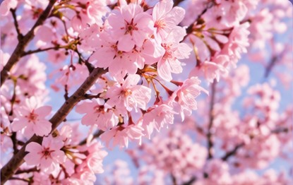
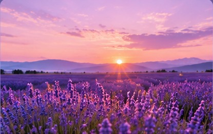
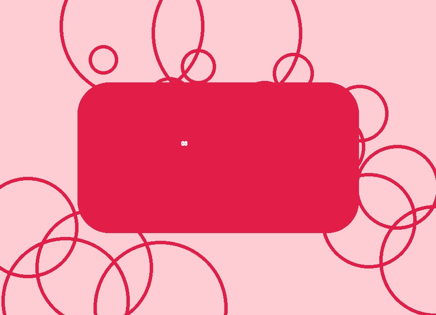
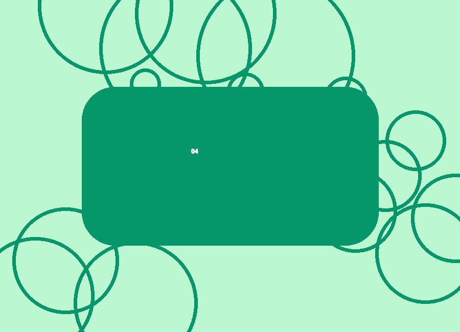
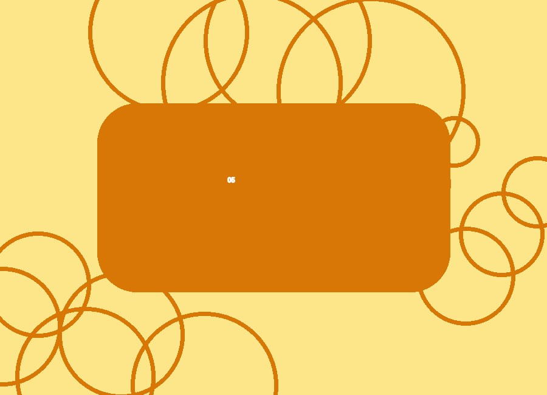
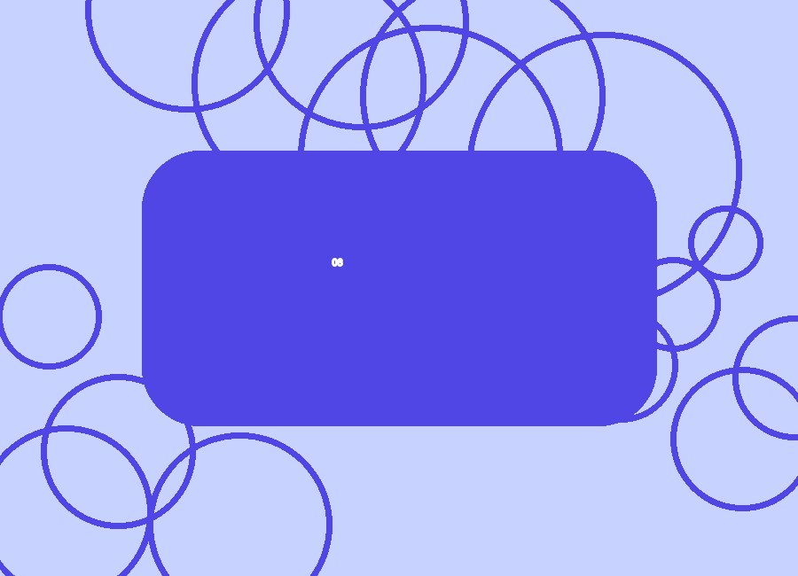

01 • Интоорын цэцэгБүтээлч байдал
3D flip: perspective, preserve-3d, backface-visibility.
CSS3 animation, 3D transform болон responsive grid ашигласан жижигхэн интерактив цомог.
Цомог үзэх ↗Карт дээр дарж эргүүлээрэй.

01 • Интоорын цэцэг3D flip: perspective, preserve-3d, backface-visibility.

02 • Лаванда цэцгийн талбайHover болон keyboard focus эффекттэй.

03 • Хотын гудамжКартууд animation-delay-аар дараалан гарна.

04 • Далайн нар жаргалтCSS custom property ашигласан.

05 • Тухтай кофе шопGrid layout дэлгэцийн хэмжээнд таарна.

06 • Шөнийн тэнгэрReduced motion тохиргоог хүндэтгэнэ.
Жишээ видео болон Монгол хадмал багтсан.
Аюулгүй iframe-д цомгийн тайлбарыг харуулав.